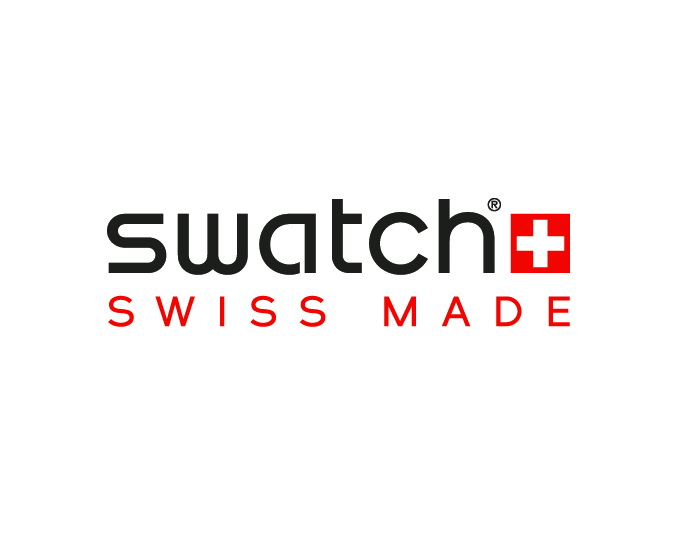

홈 > 브랜드 매거진 > 스와치
스와치
스와치는 시계를 고가의 정밀기기에서 매일 바꿔 착용할 수 있는 패션 언어로 전환했다. 시간을 알려주는 기능보다 색, 그래픽, 컬렉션, 가벼운 가격대가 브랜드 경험의 중심이 된다.
산업 분야 패션·럭셔리 · 공개 등급 매거진 완성 · 브랜드 평가 5 ★


한눈에 보는 브랜드
스와치는 시계를 고가의 정밀기기에서 매일 바꿔 착용할 수 있는 패션 언어로 전환했다. 시간을 알려주는 기능보다 색, 그래픽, 컬렉션, 가벼운 가격대가 브랜드 경험의 중심이 된다.
브랜드 관점
스와치는 시계를 고가의 정밀기기에서 매일 바꿔 착용할 수 있는 패션 언어로 전환했다. 시간을 알려주는 기능보다 색, 그래픽, 컬렉션, 가벼운 가격대가 브랜드 경험의 중심이 된다.
시작과 성장
스와치는 니콜라스 하이에크가 1983년 설립한 세계적인 스위스 시계 브랜드이다. 니콜라스는 1980년대에 급부상한 저가형 아시아 시계 브랜드의 공세에 맞서기 위해 고급 시계만을 양산하던 스위스 기업들을 합병하고 현재의 스와치 브랜드를 만들었다.
오늘날 스와치는 시즌마다 개성 있는 디자인과 아트를 담은 다양한 패션 시계와 액세서리를 선보이며 세계적인 브랜드로 성장했다.
브랜드 아이덴티티
사회적 지위를 드러내는 산물이었던 시계는 1983년 스와치의 등장과 함께 때에 따라 바꿔 착용하는 패션 소품이 되었다. 스와치는 패션 시계 시장을 개척함과 동시에 화려한 색상과 현대적인 디자인을 시계에 접목시켜 스위스를 대표하는 브랜드로 자리 잡았으며 오늘날 전 세계 119여 개국에서 판매되고 있다.
제품과 서비스
사회적 지위를 드러내는 산물이었던 시계는 1983년 스와치의 등장과 함께 때에 따라 바꿔 착용하는 패션 소품이 되었다. 스와치는 패션 시계 시장을 개척함과 동시에 화려한 색상과 현대적인 디자인을 시계에 접목시켜 스위스를 대표하는 브랜드로 자리 잡았으며 오늘날 전 세계 119여 개국에서 판매되고 있다.
현재 상태
타임라인
BI/CI 변천사
함께 읽을 브랜드
오메가(OMEGA)는 스위스 스와치 그룹 산하의 럭셔리 시계 제조 브랜드이다.
 패션·럭셔리 · 편집 검수디젤
패션·럭셔리 · 편집 검수디젤디젤(Diesel)은 1978년 렌조 로소가 이탈리아 브레간체에서 설립한 데님 중심의 컨템포러리 패션 브랜드다. 도발적이고 실험적인 디자인으로 데님 헤리티지를 재해석...
 패션·럭셔리 · 편집 검수롤렉스
패션·럭셔리 · 편집 검수롤렉스롤렉스(Rolex)는 스위스 제네바에 본사를 둔 럭셔리 시계 제조사이다.
 패션·럭셔리 · 매거진 완성루이비통
패션·럭셔리 · 매거진 완성루이비통루이비통은 여행가방에서 출발했지만, 이동의 기능을 럭셔리한 삶의 상징으로 확장했다. 브랜드의 헤리티지는 물건을 담는 도구가 아니라 이동하는 사람의 취향과 지위를 표현...
 패션·럭셔리 · 편집 검수구찌
패션·럭셔리 · 편집 검수구찌구찌는 이탈리아의 패션·럭셔리 브랜드로, 소재, 실루엣, 로고, 컬렉션 운영이 취향과 지위 신호를 만드는 영역입니다.
 패션·럭셔리 · 편집 검수샤넬
패션·럭셔리 · 편집 검수샤넬샤넬은 패션을 장식이 아니라 태도와 해방의 언어로 바꾼 브랜드다. 브랜드의 힘은 제품의 고급스러움뿐 아니라 여성의 몸과 생활 방식을 새롭게 해석한 상징성에서 나온다.
 패션·럭셔리 · 자료 기반스와로브스키
패션·럭셔리 · 자료 기반스와로브스키스와로브스키(Swarovski)는 1895년 다니엘 스와로브스키가 오스트리아 바텐스에 설립한 크리스탈 제조·럭셔리 브랜드이다.
 패션·럭셔리 · 자료 기반태그호이어
패션·럭셔리 · 자료 기반태그호이어태그호이어(TAG Heuer)는 1860년 에두아르 호이어가 설립한 스위스 고급 시계 제조사이다.